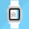
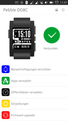
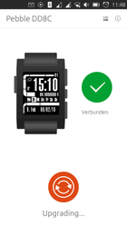
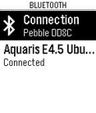
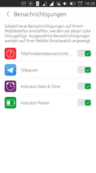
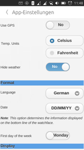
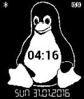
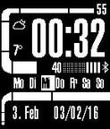

RockWork
Dieser Artikel bezieht sich auf Ubuntu Touch, die Variante von Ubuntu für mobile Geräte mit Touchscreen.
Getestet wurde der Artikel für folgende Version(en):
Ubuntu Touch 15.04 Vivid Vervet
Zum Verständnis dieses Artikels sind folgende Seiten hilfreich:
OpenStore bedienen, optional
 RockWork (ehemals upebble) ist eine inoffizielle Anwendung, um die Smartwatch Pebble in Kombination mit einem Ubuntu Phone nutzen zu können. Verpasste Anrufe, eingegangene Nachrichten und Kalendereinträge können auf der Uhr angezeigt werden. Außerdem ist die Steuerung der Medienwiedergabe auf dem Ubuntu Phone von der Uhr aus möglich. Über die Software kann man des Weiteren die Firmware der Uhr aktualisieren und zusätzliche Programme sowie Watchfaces (Designs) aufspielen. Die Anwendung befindet sich in der Entwicklung und ist noch nicht komplett eingedeutscht.
|  |  |
| Hauptbildschirm | Aktualisierung |
Unterstützt werden derzeit die folgenden Modelle:
Pebble
Pebble Time
Pebble Time Steel
Pebble Time Round
Installation¶
Store¶
Die Anwendung ist im OpenStore verfügbar und kann über diesen installiert [2] werden:
Achtung!
Die Anwendung ist nicht im offiziellen Ubuntu Store verfügbar.
Manuell¶
Von uappexplorer.com 
 die aktuelle .click-Datei herunterladen und - nach dem Wechsel in den Ordner ~/Downsloads - installieren [1]. Für die Installation wird OTA-9 benötigt, da in diesem BlueZ 5 enthalten ist:
die aktuelle .click-Datei herunterladen und - nach dem Wechsel in den Ordner ~/Downsloads - installieren [1]. Für die Installation wird OTA-9 benötigt, da in diesem BlueZ 5 enthalten ist:
pkcon --allow-untrusted install-local rockwork.mzanetti_VERSION_armhf.click
Hinweis!
Fremdpakete können das System gefährden.
Anmerkung: Die Anwendung ist nicht im offiziellen Ubuntu Store verfügbar. Für jegliche Veränderungen an Ubuntu Touch ist der Besitzer selbst verantwortlich. Weder die Artikelautoren noch ubuntuusers.de haften, falls Probleme jeglicher Art auftreten.
|  |
| Pairing |
Einrichtung¶
Pairing¶
Nach der Installation der Software auf dem Ubuntu Phone muss die Bluetooth-Verbindung eingerichtet und dies auf der Uhr bestätigt werden. Dieser Punkt kann direkt aus der Anwendung heraus über "Systemeinstellungen öffnen" aufgerufen werden.
Im Anschluss die Geräte durch Betätigen der Schaltfläche "Initialisiere Pebble" miteinander bekanntmachen. Die Smartwatch kann direkt genutzt werden.
Bedienung¶
|  |  |
| Benachrichtigungen | Konfiguration |
Das Programm gliedert sich in unterschiedliche Bereiche. Durch ein längeres Gedrückthalten eines installierten Programms können zusätzliche Menüpunkte, u.a. zur "Konfigurieren", aufgerufen werden. Wird eine installierte Anwendung mittels "Starten" aufgerufen, öffnet sich diese auf der Uhr. Um einzelne Programmteile zu entfernen, wird die Anwendung nach rechts geschoben und der  Mülleimer erscheint.
Mülleimer erscheint.
| RockWork | |
| Bereich | Beschreibung |
| "Benachrichtigungen einrichten" | Die anzuzeigenden Nachrichten festlegen. |
| "Apps verwalten" | Installierte Anwendungen verwalten und Zusatzprogramme über das Plus "+" einspielen. Einige Anwendungen können konfiguriert werden. |
| "Ziffernblätter verwalten" | Das Ziffernblatt der Uhr anpassen. Manche Designs bringen weitere Anzeigeoptionen auf das Display (z.B. Wetter). Bereits installierte Watchfaces können hier verwaltet und mittels Plus "+" neue hinzugefügt werden. |
| "Einstellungen" | Einheiten festlegen und Einstellungen zur Kalendersynchronisation. |
| "Firmware upgrade" | Aktuelle Firmware-Version über diesen Punkt aufspielen. Bestätigt wird der Vorgang mittels "Upgrade now". Dieser Menüpunkt ist nur ersichtlich, wenn eine neue Version vorliegt. |
| "sdk" | Über diese Schaltfläche gelangt man zu den Entwicklerwerkzeugen. Über "Bildschirmfotos" können selbige vom Display der Uhr angefertigt, gespeichert und auf Wunsch mit anderen Nutzern geteilt werden. Diese werden als .jpg-Datei abgelegt. Über "Report problem" können Fehlerberichte an die Entwickler gesendet werden. Via "Install app or watchface from file" können ein Programm oder Ziffernblätter von der Speicherkarte eingespielt werden. |
Handbuch¶
Ein Handbuch zur Bedienung einer Pebble gibt es nicht. Man findet jedoch im Pebble Help Center viele Informationen.
Deinstallation¶
Die Anwendung kann, wie unter Ubuntu Store beschrieben, vom Gerät entfernt werden.
|  |  |
| Tux | Wetteranzeige |


- Erstellt mit Inyoka
-
 2004 – 2017 ubuntuusers.de • Einige Rechte vorbehalten
2004 – 2017 ubuntuusers.de • Einige Rechte vorbehalten
Lizenz • Kontakt • Datenschutz • Impressum • Serverstatus -
Serverhousing gespendet von